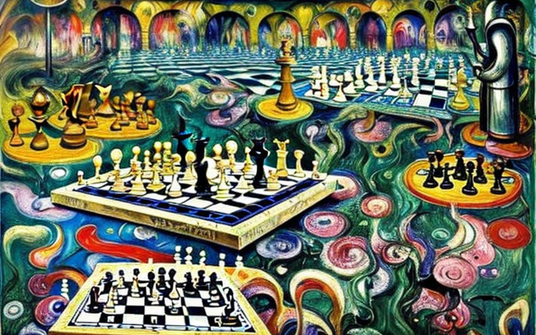
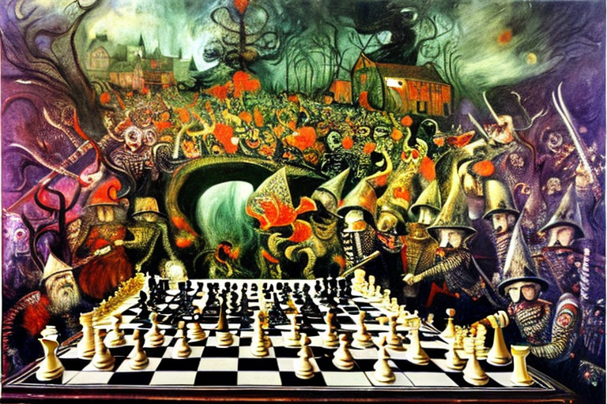
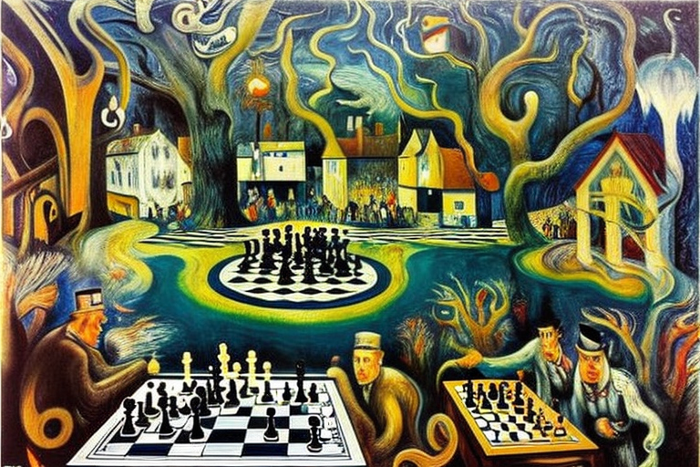
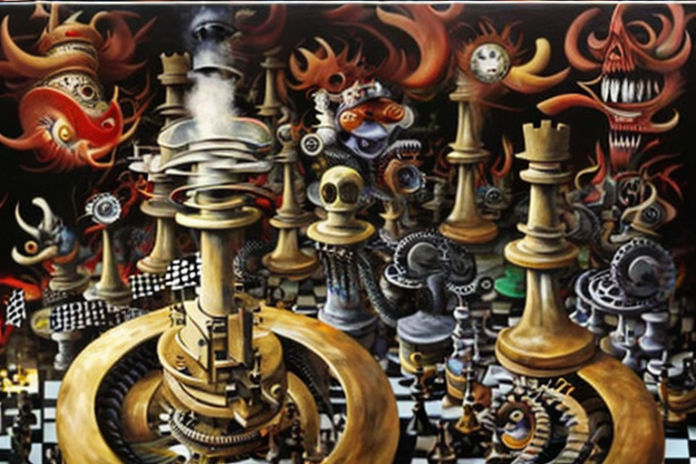
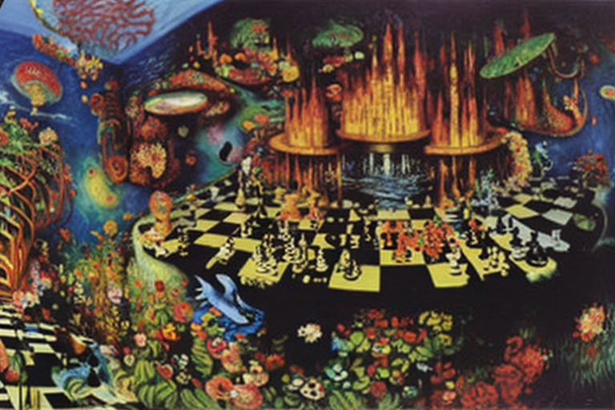

The trapped night and bishop in the center of the board
HOME
Table of Contents
In the center of the chessboard

In the ancient realm of chess, where the pieces moved in calculated ways, a knight and a bishop found themselves trapped in the center of the board. It was a strange and terrible place, unlike any other they had ever encountered.
The knight, clad in shining armor and wielding a gleaming sword, stood tall and proud. Beside him was the bishop, dressed in robes of deep purple and wielding a staff adorned with intricate carvings. They were both skilled warriors, loyal to the white king and determined to protect their sovereign at any cost.
But here in the center of the board, they were completely alone. The other pieces had vanished, leaving only the black army on the horizon, closing in on them with terrifying speed.
The knight and the bishop were trapped, their movements restricted by the looming presence of the black queen and her deadly knights. They could not move without risking capture, and yet they could not stay still for long without being overwhelmed by the black army.
As they stood there, watching the enemy approach, they began to feel a sense of dread creeping over them. The air was thick with a strange, otherworldly energy, and they could feel something stirring in the depths of the board.
It was then that they heard a voice, a voice that seemed to come from all around them and yet nowhere at all. It was a voice that spoke of ancient evils and forbidden knowledge, of powers beyond mortal understanding.
The knight and the bishop looked at each other, their eyes filled with fear and uncertainty. They knew that they were in grave danger, and that their skills as warriors might not be enough to save them from the horror that was approaching.
The white army’s counterattack

The black army continued its approach, moving in a coordinated formation towards the center of the board where the knight and bishop stood, trapped and outnumbered. The pieces moved with precision, each taking calculated steps to avoid exposing themselves to enemy fire.
The black queen led the charge, her regal form towering over the smaller pieces that surrounded her. Her knights galloped at her side, ready to strike at any moment. The pawns followed closely behind, forming a protective shield around their more valuable pieces.
Meanwhile, the white army, led by their king, stood at the edge of the board, watching as the battle unfolded. They could do nothing to help their trapped comrades, for to move forward would be to expose themselves to the enemy’s deadly fire.
The knight and bishop exchanged a brief glance, silently communicating their next move. With a swift gesture, the knight lifted his sword and charged towards the black army, his armor clanging with each step. The bishop followed closely behind, wielding his staff like a weapon.
The black army responded with a barrage of fire, the pawns unleashing a torrent of arrows while the knights charged forward with their deadly spears. The knight and bishop dodged and weaved, narrowly avoiding the attacks.
As they drew closer to the enemy, the knight and bishop split up, each taking a different flank. The bishop used his staff to unleash a powerful blast of energy, sending the black pieces flying in all directions. The knight swung his sword with deadly precision, cutting down the black knights that dared to approach him.
For a moment, it seemed as though the white pieces might prevail, but the black queen was not to be underestimated. With a fierce cry, she summoned a powerful blast of energy, sending the knight and bishop flying backwards.
They landed hard on the board, their bodies aching from the impact. The black army closed in, their eyes gleaming with malice and hunger. The knight and bishop looked at each other, their expressions grim.
The strategy of the black king

The black king was not one to accept defeat. He had watched as his army had been decimated by the brave and valiant white knight and bishop, but he refused to surrender. Instead, he began to devise a plan, one that would turn the tide of the battle in his favor.
He called a meeting with the queen and the remaining rooks, outlining his plan with a steely determination. The queen listened attentively, her eyes gleaming with a cold, calculating intelligence. The rooks nodded in agreement, eager to avenge their fallen comrades.
The plan was simple, yet effective. The queen would lead a small group of pawns in a diversionary attack, drawing the attention of the white army away from the main force. Meanwhile, the rooks would move in from the sides, flanking the white pieces and taking them by surprise.
The black king gave the order, and the army moved out. The queen and her pawns charged forward, their weapons flashing in the sunlight. The white army responded with a barrage of fire, but the queen was quick and nimble, dodging the attacks with ease.
Meanwhile, the rooks crept forward, their movements silent and deadly. They moved with a precision that spoke of years of training and discipline, each step calculated to avoid detection.
The white army was caught off guard, unable to defend themselves from the sudden onslaught. The black pieces cut through their ranks like a hot knife through butter, their weapons glinting in the sun.
But the white knight and bishop were not so easily defeated. They stood their ground, their weapons at the ready, determined to protect their king at any cost. The black pieces charged forward, their eyes gleaming with malice and hunger.
The battle was fierce and brutal, each side fighting with a determination born of desperation. The black king fought with a ferocity that belied his size, his eyes burning with a cold, unyielding fury.
The white knight and bishop fought back with a courage and determination that spoke of their unwavering loyalty to their king. They fought with a skill and precision that left the black pieces reeling, their movements slowed by exhaustion and injury.
But in the end, it was the black army that emerged victorious. The white pieces lay scattered and broken on the board, their king captured and defeated. The black king stood victorious, his eyes gleaming with a cold, merciless triumph.
Technological superiority

As the battle ceased, the black king couldn’t help but marvel at the technology that had given his army such a decisive edge. It was a technological marvel beyond anything he had ever seen before.
The engines that powered the black army were like nothing else in the world. They were sleek and futuristic, with advanced propulsion systems that allowed them to move across the board with incredible speed and agility.
These engines were powered by a revolutionary new technology, a breakthrough that had been years in the making. It was the culmination of countless hours of research, development, and experimentation, and it had finally paid off.
The black king had to admit, it was all thanks to the genius of one man: a brilliant inventor by the name of Dr. Cthulhu. Dr. Cthulhu had developed the engines that powered the black army, and he had done it with a skill and expertise that bordered on the supernatural.
The engines themselves were powered by a mysterious and otherworldly force, a force that Dr. Cthulhu claimed to have discovered in the depths of the board itself. It was a force that gave the engines an incredible power and speed, far beyond anything that the white army could ever hope to match.
The black king marveled at the engines as they cut through the white army, their movements smooth and fluid. He could feel the raw power emanating from them, a power that seemed to pulse and shimmer with an eerie, otherworldly energy.
It was then that he heard a faint whisper in the back of his mind, a voice that seemed to speak directly to his soul. It was the voice of Dr. Cthulhu, urging him to use the engines to conquer the entire board.
The black king couldn’t resist the call, and he gave the order to press on. The engines roared to life, and the black army surged forward with a speed and ferocity that left the white pieces in disarray.
In the end, the white army was no match for the power and speed of the black engines. The engines cut through their ranks like a hot knife through butter, leaving a trail of destruction in their wake.
The black king stood victorious, his army hailed as the greatest technological marvel in the history of chess. And he knew that with the engines at his disposal, he would be unstoppable, able to conquer anything and anyone that stood in his way.
Expansion of energy production

As the black army celebrated their victory, the black king could not help but notice the vast oil reserves that lay beneath the center of the board. It was a treasure trove of energy that could be used to fuel his engines and power his army for years to come.
The oil was of a high quality, rich in hydrocarbons and other valuable components. It was the lifeblood of the board, and the black king knew that he had to control it if he was to maintain his dominance.
But he also knew that he would face fierce opposition from the other armies, who would seek to claim the oil for themselves. The white army, in particular, had long coveted the oil reserves, and they would stop at nothing to take them.
The black king consulted with his advisors, including the brilliant Dr. Cthulhu, to devise a plan to protect and control the oil reserves. They knew that they had to act fast, before the other armies could mobilize their forces and launch an attack.
The plan they came up with was bold and daring, but it was also risky. They would fortify the oil fields, setting up defenses and fortifications to protect the valuable resource. They would also begin drilling new wells, expanding their production capacity and ensuring that they had enough oil to fuel their engines for years to come.
But they also knew that they would have to be prepared to fight for the oil, to defend it against any and all attackers. They would need to maintain a strong presence in the area, with chess pieces stationed at strategic locations throughout the oil fields.
It was a risky strategy, but the black king was confident that it would pay off. With the oil reserves under his control, he would have the energy he needed to maintain his dominance over the board, and to launch even more ambitious campaigns against his enemies.